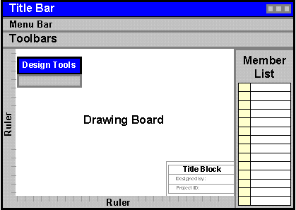

The Bridge Design Window is the graphical environment in which you create, test, optimize, and record your bridge design.
The diagram below shows the major functional components that make up the Bridge Design Window. To learn more about a each component, click the corresponding area on the diagram.

It is best to keep the Bridge Design Window maximized while you are working on your design. If the size of the window is reduced, drawing and editing your will be considerably more difficult.